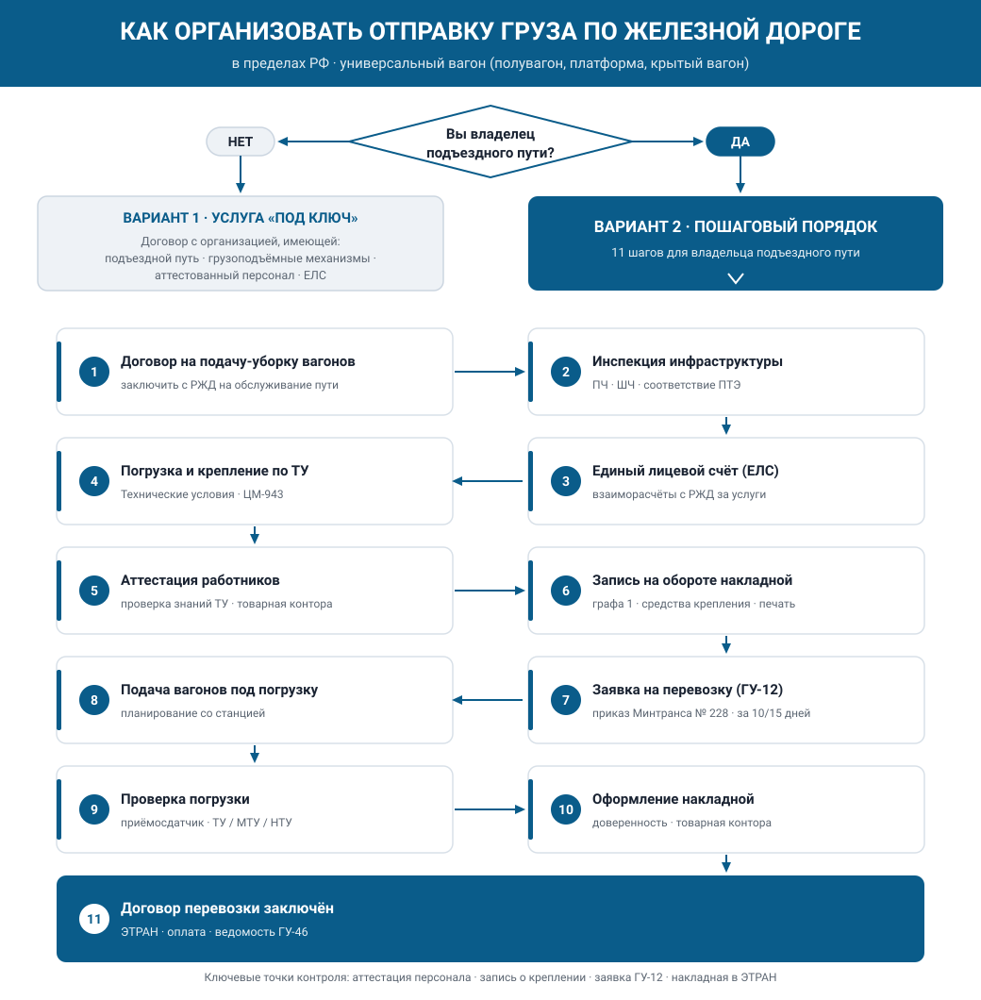

Как организовать отправку груза по железной дороге
Ниже — практический порядок действий при организации отправки груза по железной дороге в пределах РФ в универсальном вагоне (полувагон, платформа, крытый вагон). Последовательность действий зависит от того, являетесь ли вы владельцем железнодорожного подъездного пути.

Вариант 1. У вас нет подъездного пути — услуга «под ключ»
Если вы не владелец железнодорожного подъездного пути и у вас есть только груз, найдите организацию, которая имеет:
- собственный подъездной железнодорожный путь;
- необходимые грузоподъёмные механизмы для работы с вашим грузом (краны, вилочные погрузчики, ковшевые погрузчики и т.п.);
- обученных и аттестованных РЖД сотрудников с правом подписи на оборотной стороне накладной за правильность погрузки и крепления груза в подвижном составе;
- ЕЛС (единый лицевой счёт) для взаиморасчётов с РЖД.
С такой организацией вы просто заключаете договор, и она оказывает услугу «под ключ».
Вариант 2. Вы владелец подъездного пути — пошаговый порядок
Если вы владелец собственного подъездного пути, но не имеете локомотивов с разрешениями на выход на пути общего пользования и решили начать отгрузки железнодорожным транспортом, порядок следующий.
Шаг 1. Договор на подачу-уборку вагонов
Заключите договор с РЖД на обслуживание подъездного пути — договор на подачу-уборку вагонов.
Шаг 2. Инспекция инфраструктуры
Ваша железнодорожная инфраструктура должна быть проинспектирована руководителем (заместителем руководителя), а также представителями ПЧ (путевая дистанция) и ШЧ (дистанция сигнализации и связи) станции РЖД, к которой примыкает ваш подъездной путь, на предмет соответствия требованиям ПТЭ железных дорог РФ.
Шаг 3. Единый лицевой счёт (ЕЛС)
Откройте Единый лицевой счёт для взаиморасчётов с РЖД за перевозку и все сопутствующие услуги: подачу и уборку вагонов, плату за пользование вагонами, станционные сборы в соответствии с прейскурантом и т.д.
Шаг 4. Погрузка и крепление по ТУ
Погрузку на своём подъездном пути и раскрепление груза в вагонах выполняйте в соответствии с Техническими условиями размещения и крепления грузов в вагонах и контейнерах (утв. МПС РФ 27.05.2003 № ЦМ-943, с изм. от 23.10.2017): по Главе 1 и по соответствующей главе, относящейся к вашему грузу (например, погрузка лесоматериалов — Глава 2 ТУ).
Шаг 5. Аттестация ответственных работников
Работники, ответственные и непосредственно обеспечивающие погрузку, размещение, крепление и выгрузку грузов, должны проходить проверку знаний технических условий размещения и крепления грузов. Обычно такие проверки проводят заместитель начальника станции и коммерческий ревизор участка РЖД, в который входит станция примыкания вашего подъездного пути.
В товарную контору станции отправления вы передаёте копии своих приказов (распоряжений) о назначении ответственных за погрузку/выгрузку работников — с приложением паспортных данных и образцов подписей.
Шаг 6. Запись на оборотной стороне накладной
Соблюдение условий размещения и крепления груза ваш представитель удостоверяет записью на оборотной стороне накладной в графе 1:
- при размещении и креплении по ТУ — запись должна содержать номера соответствующих главы, раздела и рисунка ТУ;
- при размещении и креплении по МТУ / НТУ — номер и дату утверждения соответственно МТУ/НТУ (будет описано отдельно);
- во всех случаях — перечень применённых средств крепления (наименование и количество) и подпись грузоотправителя (с указанием должности и фамилии), заверенную печатью грузоотправителя.
Особые отметки на оборотной стороне накладной:
- при отправке кранов, экскаваторов и других машин на колёсном или гусеничном ходу, с навесным оборудованием и поворотными частями — отметка о закреплении навесного оборудования и поворотных частей, например: «От разворота стрелы применены четыре растяжки из проволоки диаметром 6 мм в четыре нити»;
- при отправке груза с многооборотными средствами крепления — отметка в графе 4 о наименовании, количестве и заводских номерах многооборотных средств крепления;
- при отправке грузов по СМГС сведения о размещении и креплении заносятся в графы 33–44 накладной и заверяются подписью и печатью грузоотправителя.
Шаг 7. Договор с оператором подвижного состава
Перед подачей заявки на перевозку заключите договор с владельцем или оператором подвижного состава и согласуйте с ним ставку за перевозку вашего груза.
Крупнейшие операторы подвижного состава в РФ
| Оператор (холдинг) | Специализация парка |
|---|---|
| АО «Первая грузовая компания» (ПГК) | универсальный оператор, крупнейший частный парк (полувагоны, крытые, платформы) |
| АО «Федеральная грузовая компания» (ФГК) | полувагоны (дочерняя структура РЖД) |
| АО «Новая перевозочная компания» (НПК) | полувагоны |
| ХК «Новотранс» | полувагоны, универсальный |
| ООО «УВЗ-Логистик» (Уралвагонзавод) | полувагоны |
| Globaltrans (НТС, БалтТрансСервис, Rail Garant) | диверсифицированный холдинг |
| АО «СГ-транс» | цистерны |
| ООО «Газпромтранс» | цистерны |
| АО «НефтеТрансСервис» | цистерны |
| ПАО «ТрансКонтейнер» | платформы, контейнеры |
| ООО «Модум-Транс» | платформы, контейнеры |
| «Деметра-Холдинг» (РусТрансКом, ТрансЛес) | зерновозы (хопперы), лесовозы |
| АО «Атлант» | универсальный |
| АО «Вектор Рейл» | полувагоны, платформы |
| АО «ТФМ-Транс» | универсальный |
| АО «ЕвроСиб» | универсальный |
Примечание: список носит ознакомительный характер и не является исчерпывающим; парки вагонов у операторов постоянно меняются. Точную ставку уточняйте у оператора при согласовании договора.
Шаг 8. Заявка на перевозку (ГУ-12)
Перевозку нужно сначала запланировать. Планирование перевозок осуществляется по форме ГУ-12 (Правила приёма заявок на перевозку грузов, утверждены приказом Минтранса России от 27.07.2015 № 228).
Срок предоставления заявки до начала перевозки:
- в прямом железнодорожном сообщении — не менее чем за 10 дней до начала перевозки;
- в прямом и непрямом международном сообщении / в прямом и непрямом смешанном сообщении / если пунктами назначения указаны порты — не менее чем за 15 дней до начала перевозки.
Только после согласования ГУ-12 перевозка считается запланированной, и РЖД по такой заявке может подавать вагоны под погрузку.
Шаг 9. Подача вагонов под погрузку
Как только оператор подошлёт вагоны на станцию примыкания, вы с операционным персоналом станции планируете подачу вагонов на подъездной путь и после постановки вагонов начинаете их погрузку.
Шаг 10. Проверка погрузки
После погрузки и раскрепления груза проверку правильности погрузки на соответствие ТУ осуществляет приёмосдатчик станции. При перевозке негабаритного груза или груза, перевозимого по МТУ/НТУ, проверку выполняет заместитель начальника станции по грузовой работе, а при отсутствии такой должности — начальник станции или коммерческий ревизор участка.
Шаг 11. Оформление накладной
После приёмки погрузки приёмосдатчиком вы оформляете железнодорожную накладную. Подпись за правильность внесения сведений в накладную делает ваш сотрудник, на которого вы оформляете доверенность и передаёте её в товарную контору станции.
Шаг 12. Заключение договора перевозки
После того как погруженные вагоны будут выведены для отправления с подъездного пути на станцию примыкания, а товарный кассир оформит перевозочные документы в системе ЭТРАН, договор перевозки считается заключённым. Остаётся оплатить услуги РЖД, в том числе услуги по подаче и уборке вагонов на/с подъездного пути — они учитываются в ведомости подачи и уборки вагонов по форме ГУ-46, по которой товарный кассир начислит стоимость услуги в соответствии с договором на подачу-уборку вагонов (см. Шаг 1).